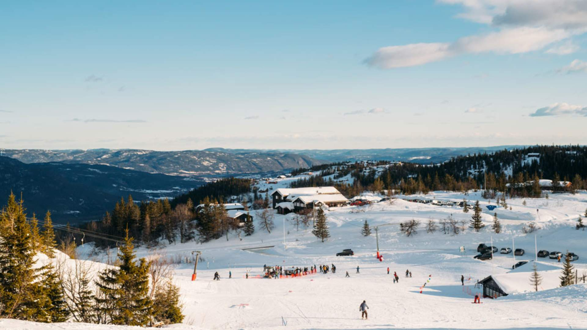

Lifjell Skisenter (Alpine)
AlpineFamily
Local alpine area with beginner to intermediate slopes. Rental & café typically on site.
Details & map
Base: ~750–800 m
Style: Family alpine
Closest town: Bø
Parking: By the lifts
Map centers the alpine area. Zoom for detail.